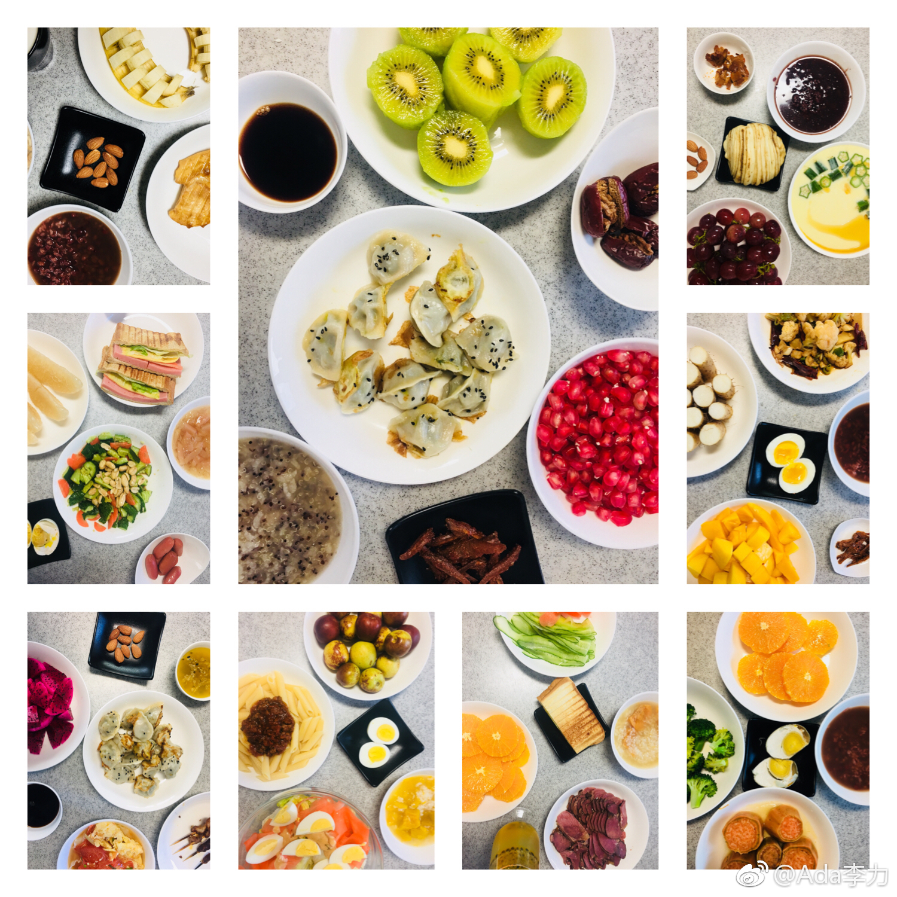

胡扯下坚持做早餐的方法论。(一）
先要明确目标，早餐是给人吃的，不是晒的。不过，对于我来说，吃得健康是第一需求，能晒是第二需求。 目标明确，就容易做选择。
目标明确，就容易做选择。
从健康吃角度出发，早餐要包括碳水化合物，蛋白质，和维生素。中式早餐从来不缺碳水化合物，粥，面条，馄饨，包子等等，蛋白质也不太缺，茶鸡蛋是中式早餐标配，经常缺的是维生素，即使有时候面条里有一两片菜叶子，量是远远不够的。
从组合上来说，不用担心碳水，也就是主食，随便抓一样就行。蛋白质要增加些选项，除了鸡蛋外，豆腐，牛肉，鸡胸，鱼虾什么的都很好。中国人喜欢的维生素是炒青菜，早晨炒菜往往不现实，但拌凉菜，或者切一盘水果还是挺快的。
保证早餐营养足够情况下，就要考虑晒的问题了。晒要注意两要素，1，食材颜色丰富，2，装饰及拍照构图。
为了颜色丰富，尽量让一餐饭里出现三种以上的颜色，比如，红，绿，黄。基本有了这三种颜色，一餐饭看起来就很缤纷。至于构图，有人喜欢用精心摆放食材，这方面，日本人是集大成者；有人喜欢用桌布加鲜花，文艺小清新最爱这招；有人喜欢用餐具，这是餐具控达人的爱好；有人喜欢用各种滤镜加文字………
我是懒人，构图就想着省时省事儿，所以就是平拍+iphone手机自带相机“鲜明”选项。只是餐具稍稍花了些心思，都是纯色，不是白，就是黑，餐桌也是素色，这样好体现食材本身的特点，不至于喧宾夺主。
但是做早餐做大的问题是时间紧。我通常会在早上20分钟内把早餐的盘盘碟碟都摆上，包括拍照和晒。怎么做到这一点，另起一篇侃。
先要明确目标，早餐是给人吃的，不是晒的。不过，对于我来说，吃得健康是第一需求，能晒是第二需求。
从健康吃角度出发，早餐要包括碳水化合物，蛋白质，和维生素。中式早餐从来不缺碳水化合物，粥，面条，馄饨，包子等等，蛋白质也不太缺，茶鸡蛋是中式早餐标配，经常缺的是维生素，即使有时候面条里有一两片菜叶子，量是远远不够的。
从组合上来说，不用担心碳水，也就是主食，随便抓一样就行。蛋白质要增加些选项，除了鸡蛋外，豆腐，牛肉，鸡胸，鱼虾什么的都很好。中国人喜欢的维生素是炒青菜，早晨炒菜往往不现实，但拌凉菜，或者切一盘水果还是挺快的。
保证早餐营养足够情况下，就要考虑晒的问题了。晒要注意两要素，1，食材颜色丰富，2，装饰及拍照构图。
为了颜色丰富，尽量让一餐饭里出现三种以上的颜色，比如，红，绿，黄。基本有了这三种颜色，一餐饭看起来就很缤纷。至于构图，有人喜欢用精心摆放食材，这方面，日本人是集大成者；有人喜欢用桌布加鲜花，文艺小清新最爱这招；有人喜欢用餐具，这是餐具控达人的爱好；有人喜欢用各种滤镜加文字………
我是懒人，构图就想着省时省事儿，所以就是平拍+iphone手机自带相机“鲜明”选项。只是餐具稍稍花了些心思，都是纯色，不是白，就是黑，餐桌也是素色，这样好体现食材本身的特点，不至于喧宾夺主。
但是做早餐做大的问题是时间紧。我通常会在早上20分钟内把早餐的盘盘碟碟都摆上，包括拍照和晒。怎么做到这一点，另起一篇侃。
- 